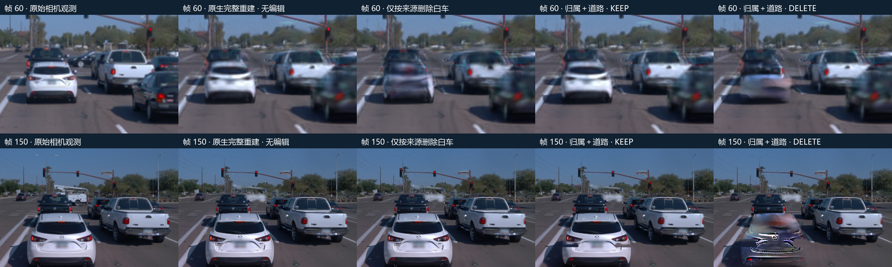
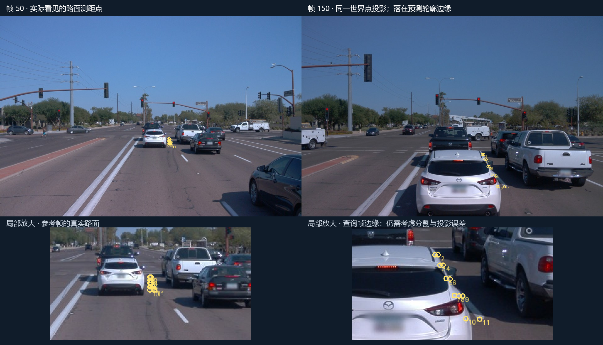
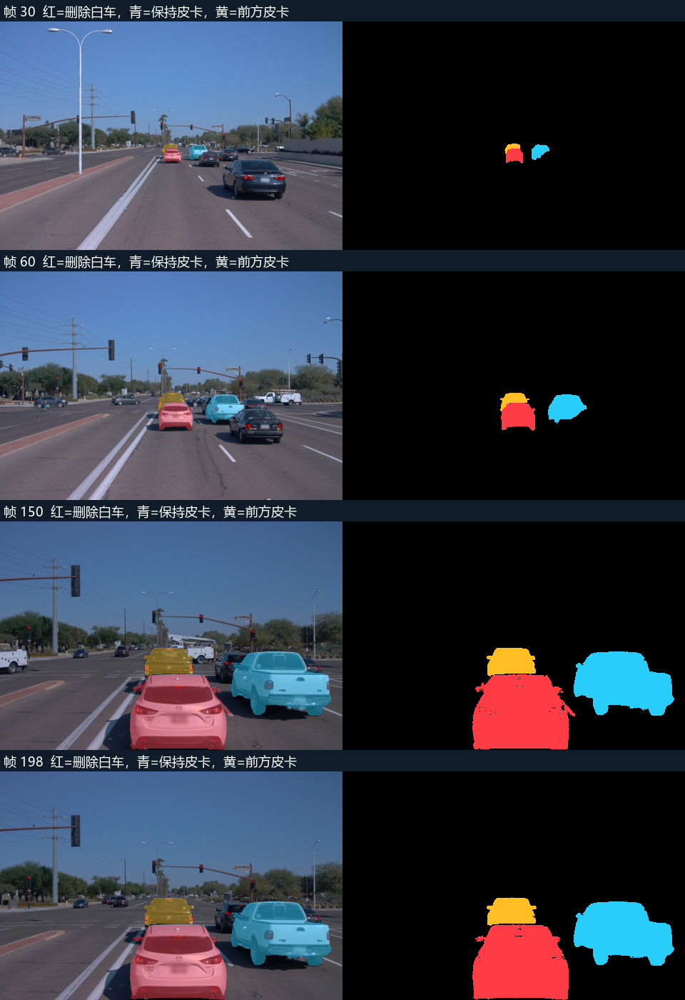

本例尚未删干净。第150帧最终图仍有明显车形残留；原生完整重建较完整。下文保留两种删除、两个KEEP以及失败的中间阶段，方便直接复核。
前方同车道白车为删除目标，右侧白色皮卡用于保持对照。原生完整场景已从头训练10,000步，另用共享跨帧归属和世界道路执行删除。两条通路均使用同一相机与时钟。
此页为图文归档版；199帧交互工作台已取回并安装在用户本地场景诊断平台。完整数值。
原生来源删除在 31/159 个构建时刻没有超过1/255的像素变化。共享归属的KEEP与原生RGB最大差 2.38e-07，纯V1与原生评价入口最大差 0。目标贡献归零是内部一致性检查，不能单独证明车辆删净或背景正确。
第150帧白车轮廓内，静态通路平均贡献约77.3%，其他来源动态通路约22.7%，自身来源动态通路约0.002%。因此，重建看起来正确并不意味着来源身份足以执行删除。

上图在每个时刻使用相同的车辆局部裁图；完整视野与原始PNG见逐帧工作台。

159帧构建，79–118连续40帧留出。完整静态、动态和环境从头训练；V1独立入口不导入编辑包，也不接入道路和车辆恢复资产。编辑通路用冻结的跨帧可见质量决定归属，再融合世界坐标道路和静态不透明度交接，统一计算遮挡。没有二维图像拼接。
本轮接通的是归属与道路子链，没有新建前方皮卡的专用补全资产，也没有使用scene-029的SUV或道路。新增实测正提示连通域输入清理单列为预处理适配，不能称作完全冻结预处理的跨场景成功。
同帧实拍与KEEP的RGB绝对误差，按像素汇总；删除前后变化另列。分割用于定位，不是人工逐像素真值。误差上升帧的分母是该行有可见像素的帧数。
| 区域 | 可见帧 | 像素 | 原生KEEP | 当前KEEP | DELETE–KEEP | 误差上升帧 |
|---|---|---|---|---|---|---|
| 目标白车 | 159 | 1,060,362 | 0.02747 | 0.04090 | 0.26883 | 137 |
| 右侧保持皮卡 | 159 | 803,150 | 0.02518 | 0.02521 | 0.00004 | 122 |
| 前方深色皮卡 | 156 | 202,716 | 0.02144 | 0.02144 | 0.00362 | 97 |
| 全部其他车辆 | 159 | 1,794,997 | 0.04552 | 0.04553 | 0.00047 | 111 |
均对同一实拍缩小图计算。PSNR按帧求值后平均。留出帧未提供实例轮廓监督，因此只报告整幅图像，不补造车辆区域分母。
| 时间窗 | 帧 | 原生MAE | 当前MAE | 原生PSNR | 当前PSNR |
|---|---|---|---|---|---|
| 构建 | 159 | 0.01361 | 0.01441 | 30.47 | 29.63 |
| 连续留出 | 40 | 0.04451 | 0.04480 | 21.16 | 21.07 |
在白车预测轮廓内，按统一排序的可见质量 α×透射率求均值。此只读诊断的RGB与原生入口的RGB最大差低于2×10⁻⁷。它区分静态与动态来源，不把通路名称当成语义真值。
| 原始帧 | 目标来源动态 | 全部静态 | 其他来源动态 | 道路 |
|---|---|---|---|---|
| 30 | 0.6694 | 0.2308 | 0.0997 | 0.0000 |
| 60 | 0.6746 | 0.1891 | 0.1362 | 0.0000 |
| 150 | 0.0000 | 0.7726 | 0.2273 | 0.0000 |
| 198 | 0.0000 | 0.8001 | 0.1997 | 0.0000 |
道路图共176,904格，55,795格具有多帧观测支持、109,689格使用邻域插值；最终激活165,401格，11,503格未接管。插值不是实测，83格标线保持不替换。
第150帧像素(250,300)呈现亮色车形残留：目标贡献为0，静态贡献约0.8953，其他动态约0.0006，道路为0。工作台的“定位亮色残留”按钮可直接检查这一位置。它定位了该像素的成像通路，尚不等于定位唯一的物理对象或根因。
前方深色皮卡尚无通过本轮规则的隐藏表面对应。道路最多只有11个2像素网格的稀疏提名，并集中在白车轮廓边缘；相机、滚动快门与预测轮廓误差仍影响对应。下面是参考帧50到查询帧150的实际世界点，不能当作密集删除真值。道路图的多视点观测域、插值域和未知域分开保存；拟合代理域误差也不是独立编辑指标。


四帧30/60/150/198经代理视觉核验；使用同一规则清理实测提示未支持的离散连通域。新原生输入为16个有实测支持的车辆、574,013静态初始点和620,145动态初始点。
真实smoke用时604.4秒、5,199次额外更新，覆盖完整保存、评价、Adam／随机状态／相机采样／SGCM／EMA精确恢复，以及恢复后两次更新和下一入口。正式训练另从头执行10,000步，保持30,000步学习率时钟；耗时1336.4秒。道路交接额外预算单列于证据。四组可见质量互斥且守恒，非目标静态与动态通路分别保存；通路分组不等于语义真值。
代理图像观察：第150帧仍有明显车形残留；执行的归属与道路通路未通过删除清洁度检查。白车KEEP的像素汇总误差也高于原生重建。此判断不代填用户的人工结论。运行完成与质量验收分开，人工结论留空；本轮没有AutoDL电源操作。模型与原始测距留存远端，逐帧PNG、四帧float32、指标、配置和执行源代码已取回。